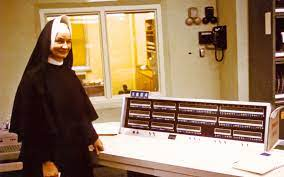

Mary Kenneth Keller 03 de Novembro de 2023  Nascida em Ohio por volta de 1913, Keller entrou para a ordem das Irmãs de Caridade da Bem-Aventurada Virgem Maria em 1932 e proferiu seus votos em 1940, tornando-se oficialmente freira. No ano de 1943, conquistou seu diploma de bacharelado em Ciência com ênfase em Matemática na Universidade DePaul, local no qual desenvolveu seu mestrado em Matemática e Física. Em 1958, Mary começou a trabalhar em uma oficina de ciência da computação, da Fundação Nacional de Ciência, dos Estados Unidos, no Dartmouth College, um local predominantemente masculino na época, onde participou do desenvolvimento da linguagem de programação BASIC. BASIC é um acrônimo para Beginner's All-purpose Symbolic Instruction Code; em português: Código de Instruções Simbólicas de Uso Geral para Principiantes. O BASIC é um meio de traduzir os códigos dos computadores de maneira mais direta e tem como propósito ampliar a programação de computadores em campos não matemáticos e científicos, o que permitiu que qualquer pessoa pudesse aprender a linguagem, se tornando mais acessível para a população. No ano de 1965, após finalizar seu doutorado, Mary fundou um departamento de ciências da computação na Universidade de Clarke em Iowa, passou 20 anos de sua vida dedicando-se e apaixonando-se pelo potencial do que os computadores poderiam se tornar e visou aumentar o acesso e a informação, promovendo a educação. Hoje a Universidade Clarke tem o Centro de Serviços de Computação e Informação Keller, devido aos serviços por ela ofertados em telecomunicação e computação a alunos, funcionários e professores. Existe também uma bolsa de estudos em Ciência da Computação em seu nome na mesma instituição. Irmã Keller defendeu a inclusão e o envolvimento de mulheres na ciência da computação, e contribuiu para a fundação da Association of Small Computer Users in Education (ASCUE). Seus quatro livros sobre computação e programação são referência na área. Para ela, a computação trouxe uma explosão de informação e essa informação era inútil a menos que estivesse disponível. Ela acreditava que com a computação seria possível simular, mecanicamente, o processo cognitivo e assim investir em áreas como inteligência artificial. Acreditava na importância do ensino com o auxílio da tecnologia e em como a computação poderia ajudar os seres humanos a aprender. Você pode saber mais clicando na imagem